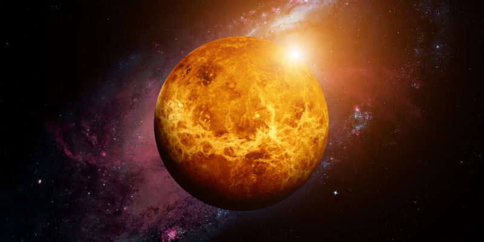
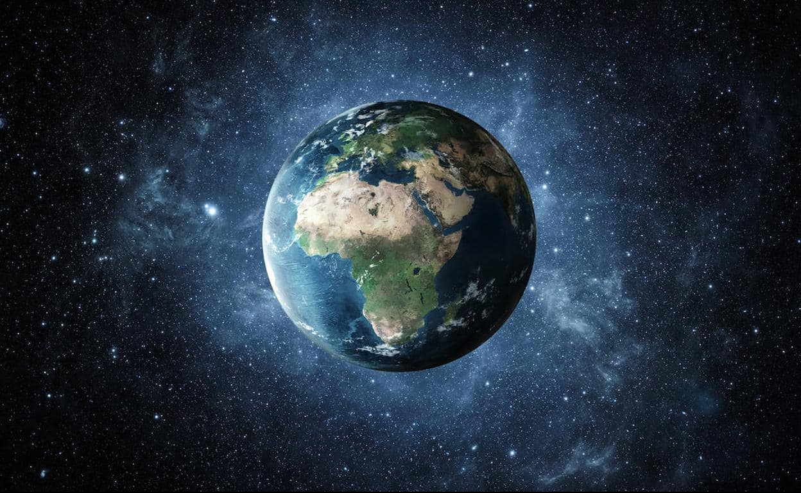
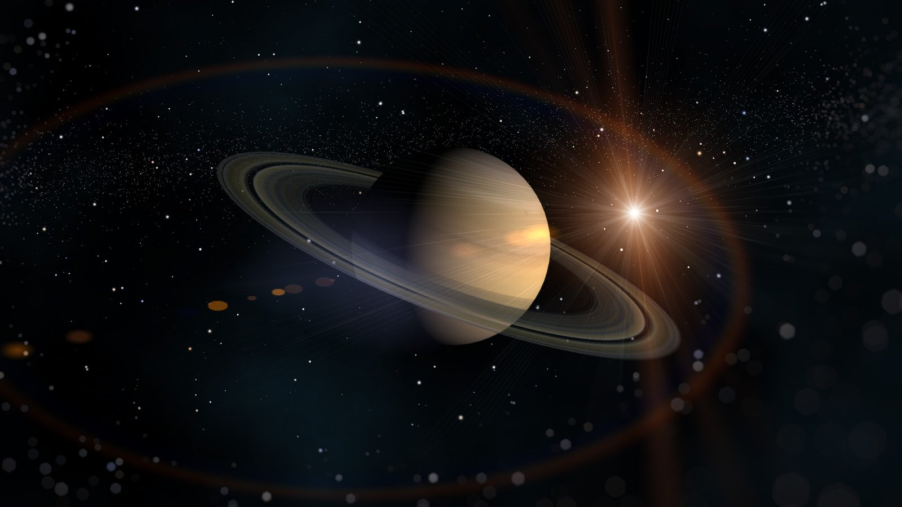
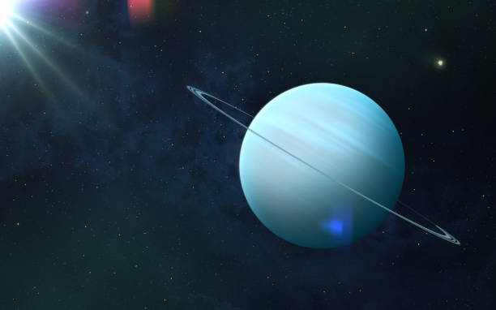

Planetas del Sistema Solar

Mercurio - El más cercano al sol.

Venus - Conocido como el planeta gemelo de la Tierra.

Tierra - Nuestro hogar en el espacio.

Jupiter - El gigante gaseoso más grande.

Saturno - Con sus impresionantes anillos.

Urano - Un planeta inclinado en su órbita.

Neptuno - El último planeta del sistema solar y el más alejado.
Tabla de Planetas
| Planeta | Diámetro | Distancia al Sol | Lunas |
|---|---|---|---|
| Mercurio | 4,880 km | 57.9 millones de km | 0 |
| Venus | 12,104 km | 108.2 millones de km | 0 |
| Tierra | 12,742 km | 149.6 millones de km | 1 (La Luna) |
| Marte | 6,779 km | 227.9 millones de km | 2 (Fobos y Deimos) |
| Jupiter | 139,822 km | 778.3 millones de km | 79 |
| Saturno | 116,464 km | 1,427 millones de km | 82 |
| Urano | 50,724 km | 2,871 millones de km | 27 |
| Neptuno | 49,244 km | 4,498 millones de km | 14 |